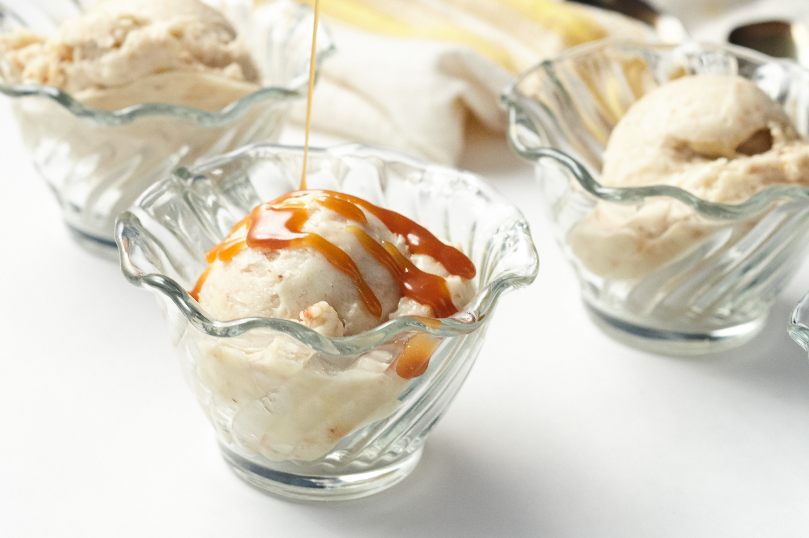

Goals as an RA

These include my goals both personally and professionally. This is what I expect to achieve as a student in ALA 421 and as a member of Restaff in the future.
- Know all the names, pronouns, and years for all residents. To create a community, we need to know each other.
- I want to facilitate events, hopefully several each semester so that the residents have an opportunity to know each other better too. It cannot just be me making the effort to build this community.
- Build relationships with my peers on Resstaff, whether that is other RAs, DPEs or HDs. Community is built around the Resstaff members themselves as well.